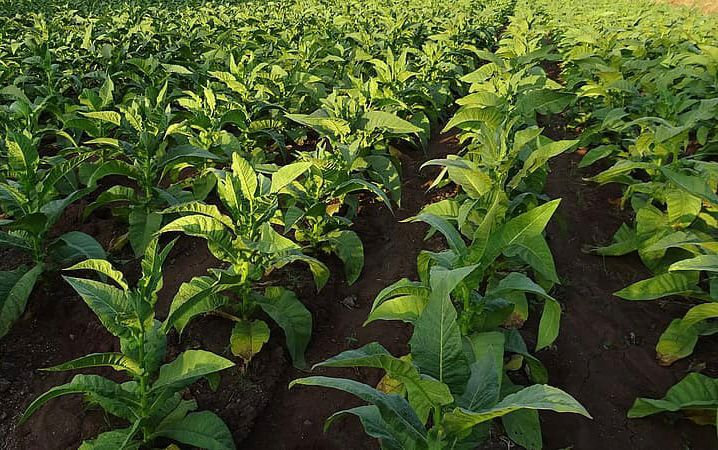
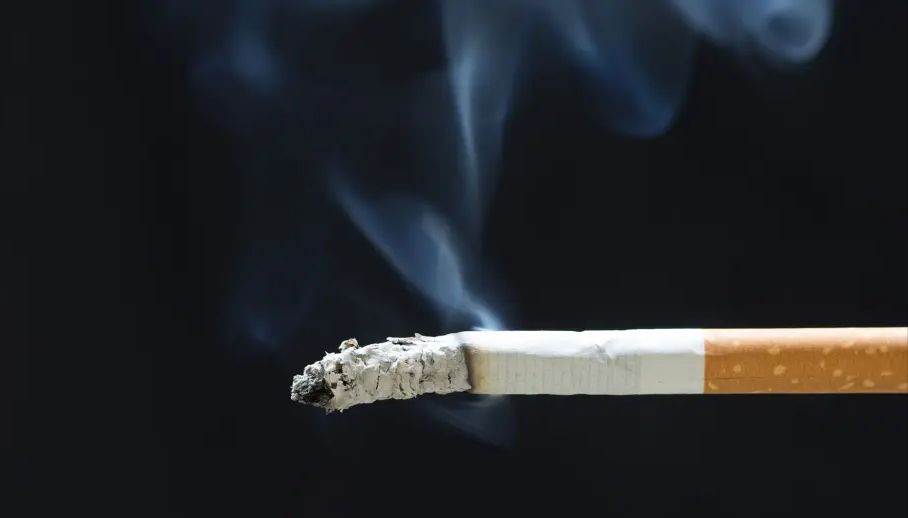
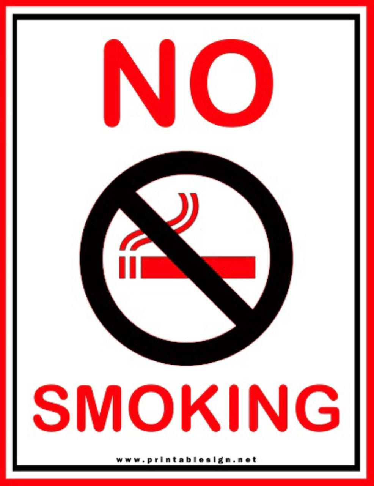
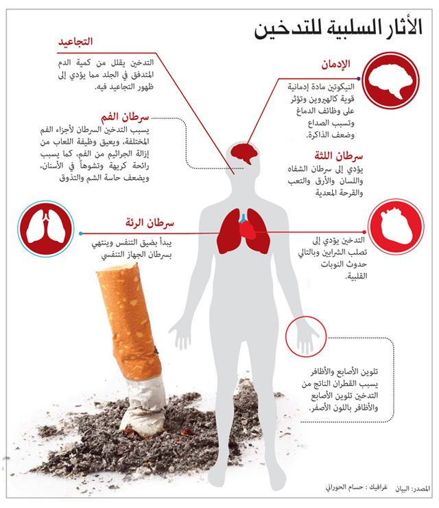

النيكوتين
ماهو التيكوتين؟
النيكوتين هو مركب عضوي شبه قلوي وسام. يوجد في الطبيعة في جميع أجزاء نبات التبغ، مع تركيز أكبر
في الأوراق. يوجد النيكوتين كذلك، إلى جانب التبغ، في الطماطم، فلفل الأخضر والباذنجان وغيرها.
كما أنه يوجد أيضا في أوراق نبات الكوكا.
تستخدم النباتات وخاصة التبغ النيكوتين كوسيلة للدفاع عن نفسها ضد الحشرات.
الصيغة الكيميائية: C10H14N2


التدخين والنيكوتين
التدخين هو عملية يتم فيها حرق مادة التبغ
وبعدها يتم تذوق الدخان أو استنشاقه.
وتتم هذه العملية في المقام الأول باعتبارها ممارسة للترويح عن النفس.
ينتج عن احتراق التبغ العديد من المواد الكيميائية وفي مقدمتها النيكوتين المادة الفاعلة في المخدر،
مما يجعلها متاحة للامتصاص من خلال الرئة.
تعد السجائر هي أكثر الوسائل شيوعا للتدخين في الوقت الراهن،
سواء كانت السيجارة منتجة صناعيا أو ملفوفة يدويا من التبغ السائب وورق لف السجائر.
وهناك وسائل أخرى للتدخين تتمثل في الغليون، السيجار، الشيشة، والبونج(غليون مائي).
اخطار النيكوتين في جسم الأنسان
يؤدي تعاطي التبغ في الغالب إلى أمراض تؤثر على القلب، والكبد، والرئتين. التدخين هو أحد عوامل
الخطر
الرئيسية للنوبات القلبية، والسكتات الدماغية، ومرض الانسداد الرئوي المزمن (COPD) (بما في ذلك انتفاخ الرئة
والتهاب الشعب الهوائية المزمن)،
والعديد من أنواع السرطان (وخاصة سرطان الرئة، وسرطان الحنجرة والفم، وسرطان البنكرياس.)
كما يسبب مرض الشرايين المحيطية وارتفاع ضغط الدم.
تعتمد التأثيرات على عدد السنوات التي يدخنها الشخص وعلى مقدار ما يدخنه الشخص. بدء التدخين في وقت مبكر من
الحياة
وتدخين السجائر يكون أعلى عند استخدام مانعات التسرب ويزيد من خطر هذه الأمراض.
أيضا، أظهر دخان التبغ البيئي، أو التدخين السلبي، آثارًا صحية ضارة على الناس من جميع الأعمار.
يعد تعاطي التبغ عاملًا مهمًا في حالات الإجهاض بين المدخنات الحوامل، ويساهم في عدد من…


الاقلاع عن النيكوتين
يمكن أن تكون الرغبة الملحّة في تدخين التبغ قوية بالنسبة إلى معظم الأشخاص الذين يتعاطون التبغ.
ومع ذلك بإمكانك التغلب على هذه الرغبات الملحّة.
فيما يأتي 5 طرق لمساعدتك على مقاومة الرغبة في التدخين أو تعاطي التبغ في حالة الرغبة الملحّة.
-
جرّب العلاج ببدائل النيكوتين وتتضمَّن الخيارات ما يلي:
-
النيكوتين الذي يُصرف بوصفة طبية على هيئة بخاخ أنف أو مِنشَقة
-
اللصقات والعلكة وأقراص الاستحلاب التي تحتوي على نيكوتين، وتُصرف دون وصفة طبية
-
أدوية الإقلاع عن التدخين التي تُصرف دون وصفة طبية مثل البوبروبيون (Wellbutrin SR،
وWellbutrin XL، وغيرها من الأدوية) والفارينيكلين
-
تجنب المثيرات
لا تجعل نفسك في مكان أو موقف تنتكس فيه وتعود إلى التدخين. فعلى سبيل المثال، إذا كنت تدخن عادةً أثناء
حديثك عبر الهاتف، فاحتفظ بقلم وورقة قريبين لتظل مشغولاً بالرسم بدلاً من التدخين.
-
مارس الأنشطة البدنية
يمكن أن تساعد ممارسة الأنشطة البدنية على صرف انتباهك عن الرغبة الملحّة في تدخين التبغ. حتى القيام
بالأنشطة القصيرة المفاجئة، مثل صعود السلالم ونزولها راكضًا عدة مرات، قد تنهي الرغبة الملحّة في تدخين
التبغ. الخروج للتنزه أو الركض.
-
طلب التعزيزات
اتصل بأحد أفراد الأسرة أو بصديق أو أحد أفراد مجموعات الدعم ليُساعدك في التغلب على الرغبة الملحّة في تعاطي التبغ. تحدث إلى ذلك الشخص هاتفيًا واخرج معه في نزهة، وتبادلا الدعابات أو
الدعم.
-
ضع فوائد الإقلاع عن التدخين نصب عينيك
اكتب أسباب رغبتك في التوقف عن التدخين ومقاومة الرغبة الملحّة في تدخين التبغ أو رددها بصوت مرتفع. قد تتضمن هذه الأسباب ما يأتي:
-
تحسُّن الحالة المزاجية
-
التمتع بصحة أفضل
-
وقاية الأشخاص الأعزاء المحيطين بك من التدخين السلبي
-
توفير المال